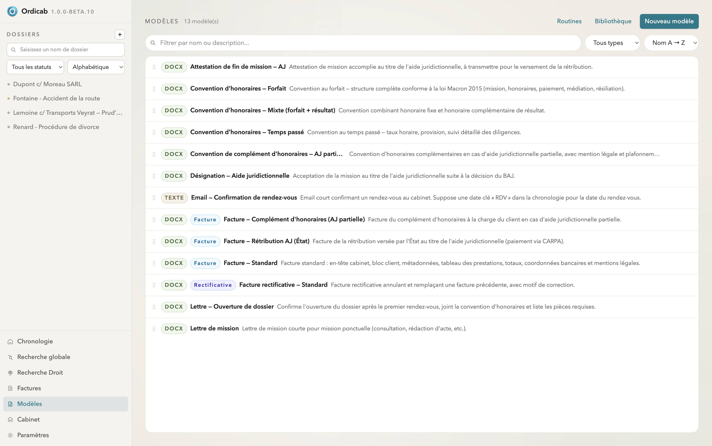
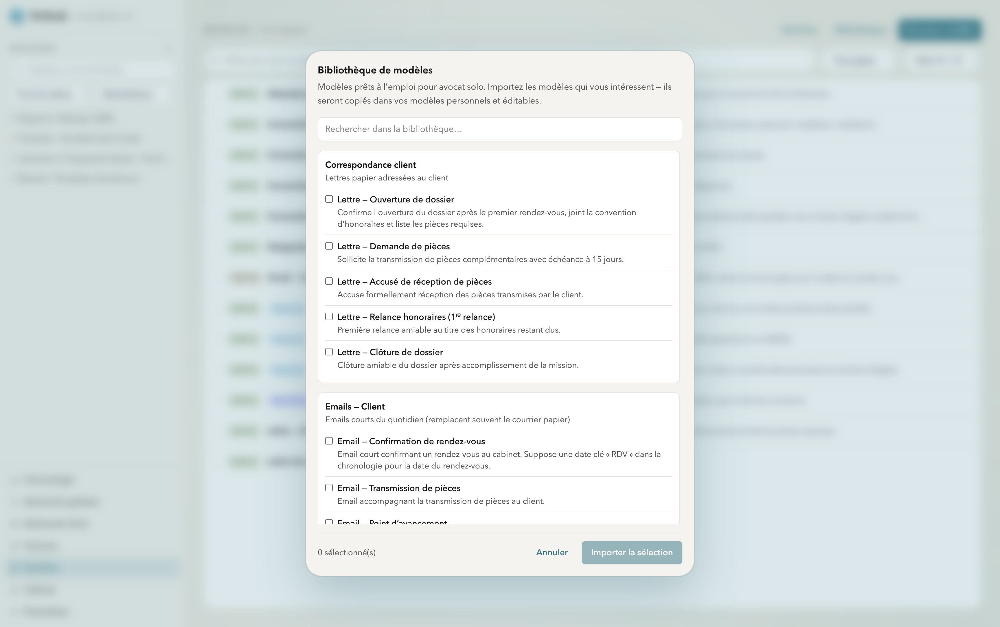
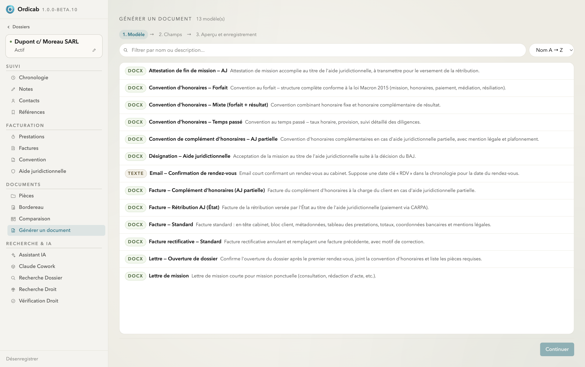

Modèles & génération
Les modèles transforment vos documents répétitifs en gabarits réutilisables. Ordicab les remplit automatiquement avec les données du dossier — contacts, références, convention — pour produire un document prêt à relire en quelques secondes.
La bibliothèque de modèles
La vue Modèles liste vos gabarits, classés et étiquetés par type (courrier, email, facture, acte…). Trois onglets : Routines, Bibliothèque et Nouveau modèle.

Modèles — catalogue des gabarits du cabinet, classés par type
La Bibliothèque propose des modèles prêts à l'emploi pour avocats (lettres d'ouverture de dossier, demandes de pièces, relances d'honoraires, emails de confirmation de rendez-vous…). Importez ceux qui vous intéressent : ils sont copiés dans vos modèles, où vous pouvez les adapter.

Bibliothèque de modèles — sélection de gabarits prêts à l'emploi à importer
Générer un document
Depuis un dossier, Générer un document ouvre un assistant en trois étapes :
- Modèle — choisissez le gabarit (DOCX ou texte).
- Champs — Ordicab pré-remplit les variables depuis le dossier ; complétez ou corrigez ce qui manque.
- Aperçu & enregistrement — relisez puis enregistrez le document dans les pièces du dossier.

Générer un document — choix du modèle, première étape de l'assistant en trois temps
Suivant : Recherche & vérification →